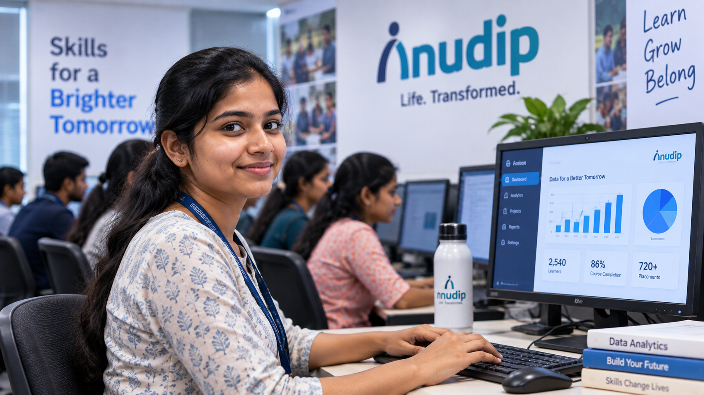
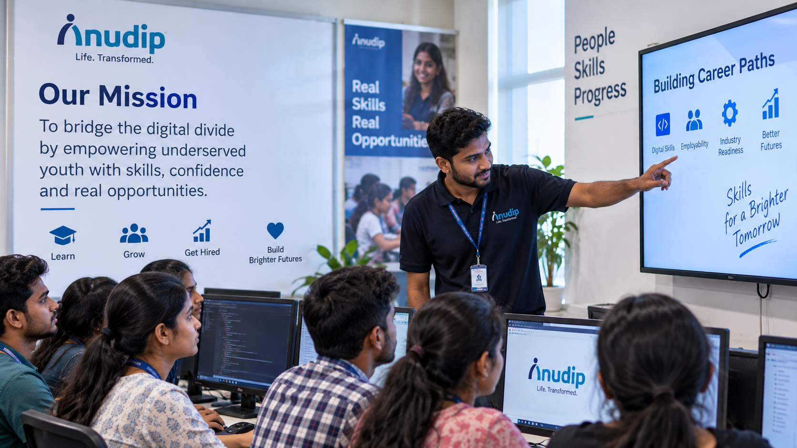

About Us
We started with one question: what happens if talent gets a fair shot?
Anudip Foundation for Social Welfare was founded in 2007 in Kolkata by a small group who left corporate careers to close India's digital divide from the ground up.

I never touched a computer before Anudip. Now I build dashboards for a logistics company.

Our mission
Most of the young people who walk into an Anudip classroom have talent that was never given a runway — no laptop at home, no one in the family who's worked in an office, no map for how to get from a village school to a paycheck.
We close that gap with market-aligned training in coding, AI, IT support and professional communication — built with employers, not around them — so what a learner walks out with is something a company actually needs.
Today that means over 7,30,000 learners trained, 53% of them women, across 90+ centres in 22 Indian states and 3 countries, with roughly 7 in 10 graduates going on to paid work.
We weren't trying to build another training institute. We wanted proof that one fair shot at a skill can change the arithmetic for an entire household — not just for one person's resume.
Where we started
One rented room in Kolkata, a handful of trainers, and a bet that job-ready skills could travel further than a resume ever would.
Where we are now
Dignity first
Training is designed around respect, not charity — every learner is treated as someone building a career, not receiving a favour.
Employer-aligned
Curriculum is co-designed with hiring partners, so skills taught map directly to roles companies are actually filling.
Inclusion by design
Centres are built to reach women, refugees, people with disabilities and rural communities — not as an afterthought.
Outcomes over output
Success is measured in job placements and income change, not just certificates handed out.
How we got here
Founded in Kolkata
Started by a small founding team focused on livelihood initiatives through digital skills.
First multi-state expansion
Training centres opened beyond West Bengal as demand from employers grew.
DeepTech & corporate CSR partnerships scale up
Partnerships with major corporates formalised, funding dedicated advanced-tech training tracks.
AI Academy launched
A dedicated track for generative and applied AI skills, preparing learners for roles emerging right now.
A nationwide, three-country network
From one room in Kolkata to 90+ centres — with the next chapter shaped by whoever walks in next.
Questions we get asked
Yes. Programmes are funded through corporate CSR partners, grants and donors, so cost is never the reason a learner turns back at the door.
We recruit directly in underserved communities and select on aptitude and willingness to learn, not prior computer experience or academic marks.
Employer partners run hiring drives at our centres and get first access to graduating cohorts whose training was shaped around their own role requirements.
Individuals and companies can fund a centre, mentor a cohort, or open hiring pipelines — reach out through the Contact page and we'll match you to the right fit.